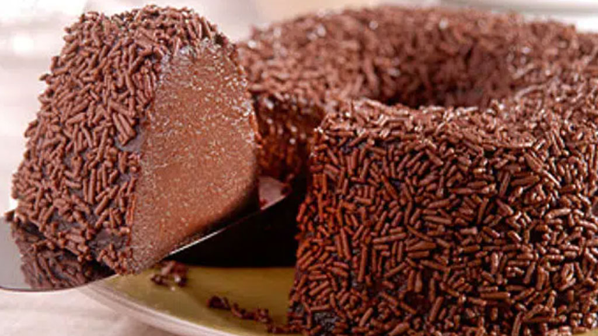

BrigadeirãoIngredientes:
Modo de preparo:Bata o leite condensado, o leite de vaca, a manteiga, o chocolate em pó e os ovos no liquidificador. Unte uma forma com buraco no meio e polvilhe com açúcar. Coloque a mistura liquidificada na forma e leve ao forno para assar em banho-maria por mais ou menos 1 hora, a 150°C. |
Mousse de MorangoIngredientes:
Modo de preparo:Dissolver a gelatina em água fervente. Bater o leite condensado, o creme de leite, a gelatina e 300 g de morango sem as folhinhas, no liquidificador de uma só vez. Coloque tudo na travessa que desejar e de deixe na geladeira por pelo menos 6 horas. |

Manjar de CocoIngredientes:
Modo de preparo:Coloque o leite, o açúcar, o leite de coco e o coco ralado em uma panela, misture bem. Leve ao fogo e junte o amido de milho dissolvido em um copo de leite. Mexa sempre até engrossar, aguarde mais um minuto. Despeje em uma forma decorada, untada com óleo ou simplesmente molhada. Deixe esfriar e leve à geladeira por 2 horas. Sirva com calda de ameixa ou calda de morangos. |

Pudim de Leite NinhoIngredientes:
Modo de preparo:Coloque o açúcar em uma forma para pudim, leve ao fogo, deixe o açúcar derreter e distribua a calda por toda a forma. No liquidificador, misture os demais ingredientes até obter uma lisa e homogênea. Despeje a massa na forma reservada e leve ao forno em banho-maria por 50 minutos. |
PavêIngredientes:
Ingredientes Creme branco:
Ingredientes Creme Chocolate:
Modo de preparo Creme branco:Bata todos ingredientes no liquidificador, logo após despeje em uma panela e leve ao fogo médio, misture até obter uma consistência grossa e cremosa. Reserve. Modo de preparo Creme de chocolate:Repita o processo feito no creme branco. Reserve. Modo de preparo da Montagem:Em um refratário grande, você vai intercalar o creme branco com o creme de chocolate. Exemplo coloque um pouco de creme branco, molhe a bolacha ao leite e coloque em cima do creme branco, depois despeje um pouco do creme de chocolate, coloque a bolacha como descrito anteriormente. Vai repetindo o processo ate que termine. Em cima pode ser decorado como preferir, aconselho com raspas de chocolates. Depois de pronto leve à geladeira por 40 minutos. |

Gelatina ColoridaIngredientes:
Modo de preparo:Prepare as gelatinas com sabor conforme explicado na embalagem, porém utilizando metade da água indicada (só 250 ml. Ferve 150 ml para misturar o pó e depois acrescenta mais 100 ml, fria, para cada uma). Deixe na geladeira até endurecerem (duas horas). No liquidificador bata o creme de leite junto com o leite condensado e a gelatina sem sabor hidratada como indica a embalagem (com 5 colheres de água e leva ao micro-ondas por 15 segundos). Reserve. Com uma faca corte as gelatinas em quadradinhos para formar cubos e coloque-as em uma vasilha. Despeje por cima o creme do liquidificador e misture devagar. Despeje tudo em uma forma onde irá servir ou para desenformar, em forma de pudim com buraco no meio ou de pão, molhada com água. Leve à geladeira por duas horas, pelo menos. Desenforme e sirva. Se preferir coloque em uma travessa e sirva sem desenformar. |